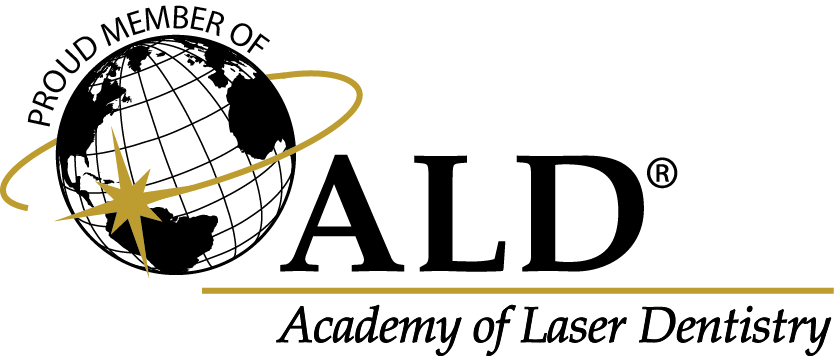

Formación avanzada en fototerapia para profesionales de la salud. Porque incorporar tecnología es fácil: integrarla con fundamento científico y sentido clínico es lo que marca la diferencia.

Cursos diseñados para transformar la evidencia científica en herramientas aplicables desde el primer día de práctica clínica.
Integra la fototerapia en el manejo de los trastornos temporomandibulares y el dolor orofacial, con la evidencia y el criterio clínico detrás de cada decisión.
Curso presencial sobre frenillo lingual y motricidad orofacial. Esta versión ya completó sus cupos.
Aplicaciones de la fototerapia en el tratamiento periodontal, de la evidencia al protocolo clínico.
Principios, parámetros y seguridad de la fototerapia clínica. La base para tomar cualquier curso aplicado.
Detrás de MEDadvance hay especialistas que ejercen, investigan y enseñan fototerapia. Cada curso nace de la práctica clínica real, y para cada tema sumamos especialistas invitados de distintas áreas.


Escríbenos y te mandamos el programa, el valor y los cupos disponibles.
Inscribir